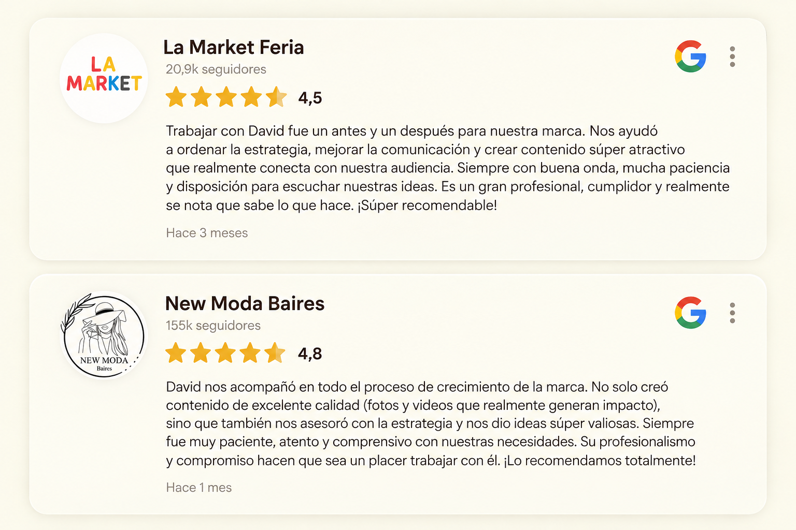
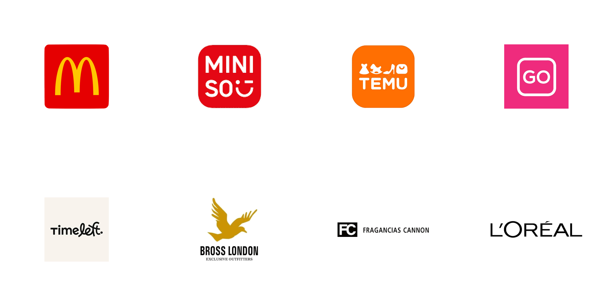
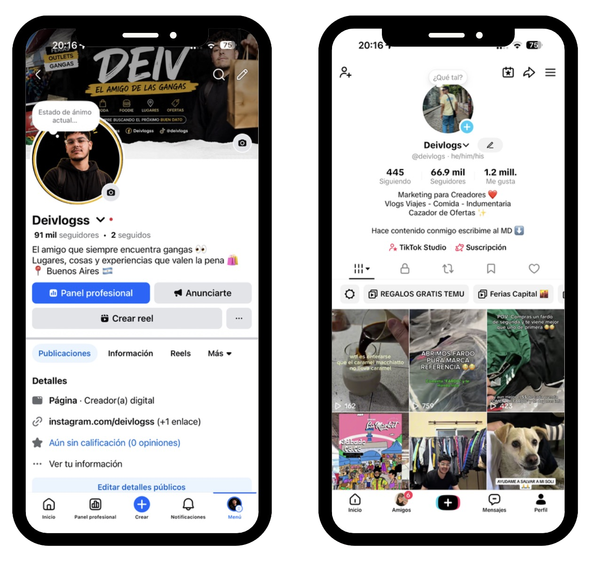
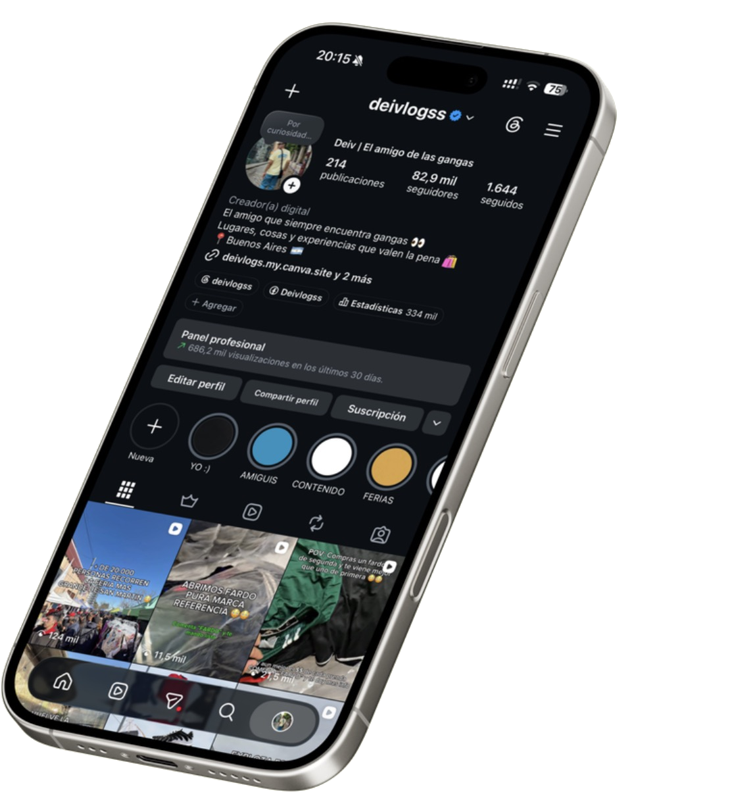
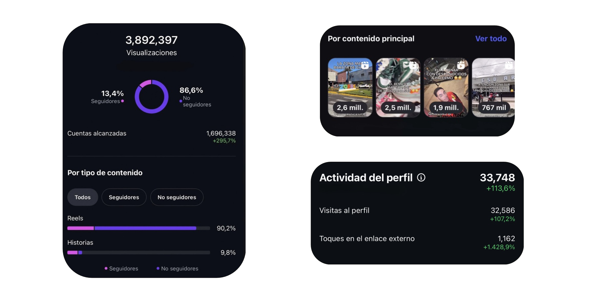
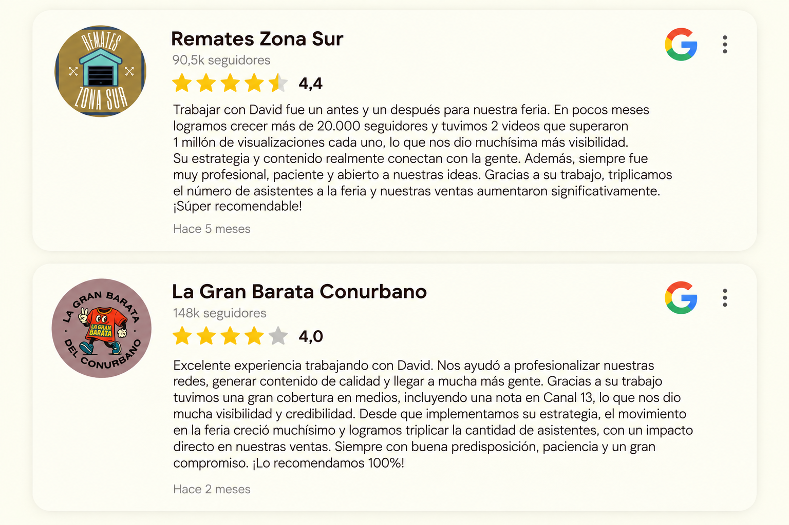
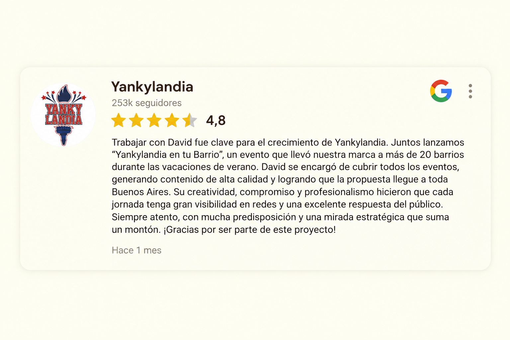

La Market Feria / New Moda Baires
01 / 03
Reseña / Google

Content Creator · UGC · IA
Conectando marcas con audiencias reales a través de contenido, creatividad y estrategia.
01 — Sobre mí
Content · Strategy · Storytelling
Soy David Ramirez, creador de contenido y profesional del marketing digital. Trabajo donde se cruzan la creatividad, la estrategia y la cultura digital, para ayudar a las marcas a encontrar su voz.
Una marca no necesita simplemente estar en redes. Necesita tener algo para decir. Mi trabajo es encontrar esa idea, construir su historia y convertirla en contenido que la gente quiera mirar, recordar y compartir.
Por qué yo · Humano · Estrategia · IA
Desarrollé mis estrategias a prueba y error, y hoy las aplico en marcas de distintos rubros.
La inteligencia artificial también es parte de mi proceso: una herramienta que complementa y potencia mi trabajo, no que lo reemplaza.
01
Estrategia
Encontrar qué decir.
02
Storytelling
Encontrar cómo contarlo.
03
Contenido
Hacer que alguien quiera verlo.
+50
Proyectos realizados
+20
Clientes que confiaron en mí
+4
Años creando contenido
02 — Marcas
08 Brands
Campañas, colaboraciones y contenido pensado para que un producto llegue a personas reales.

Collaborations · Campaigns · Content
Ver trabajos ↓03 — Visual Work
Carpeta de trabajos
Campañas, UGC y contenido con IA para marcas, productos y comunidades digitales. Están todos en mi carpeta de trabajos.
Ver todos mis trabajos
¿Querés algo así para tu marca?
Hablemos04 — Resultados
Caso propio · Deivlogss
Deivlogss nació de una idea simple: ser el amigo que siempre encuentra las gangas. Esa idea se volvió una identidad que la gente reconoce antes de ver quién publicó.
Fuente: mis perfiles de Facebook y TikTok.

01 — La idea
En mi caso, la idea de ser ese amigo que siempre encuentra las gangas se convirtió en una identidad que atraviesa cada publicación.
02 — La identidad
No se trata solamente de publicar. Se trata de construir una personalidad, una estética y una forma de comunicar que la gente reconozca incluso antes de ver quién publicó.


03 — El alcance
Gran parte del crecimiento pasa fuera de la comunidad que ya existe. Las recomendaciones, los Reels y el contenido compartible hacen que una idea viaje mucho más allá de los seguidores.
04 — Los datos
Visualizaciones, alcance, visitas al perfil e interacciones convierten una idea creativa en datos concretos. Y esos datos muestran qué funciona y qué se puede hacer mejor.
05 — Reseñas
05 Clientes
Lo que contaron cinco ferias y marcas después de trabajar conmigo. Las reseñas completas están más abajo.
En pocos meses sumaron más de 20.000 seguidores y dos de sus videos superaron el millón de visualizaciones cada uno.
Con “Yankylandia en tu Barrio” llevaron su marca a más de 20 barrios durante las vacaciones de verano, y yo cubrí todos los eventos.
El trabajo les dio una gran cobertura en medios, incluida una nota en Canal 13.
Para su marca, trabajar juntos marcó un antes y un después.
Los acompañé en todo el proceso de crecimiento de la marca.
Reseñas completas
01 / 03
Reseña / Google

02 / 03
Reseña / Google

03 / 03
Reseña / Google

06 — Contacto
Buenos Aires · 2026
Tenés una marca. Yo tengo una comunidad que está buscando qué descubrir después. Hagamos algo juntos.
Contame qué tenés en mente y vemos cómo crear una campaña que tenga sentido para tu marca.